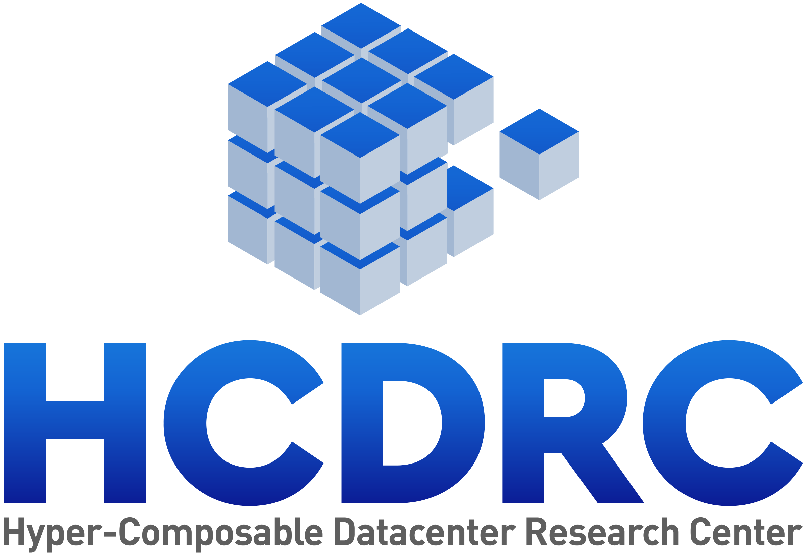
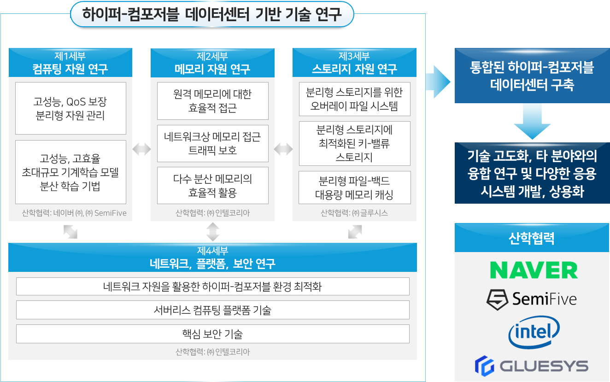
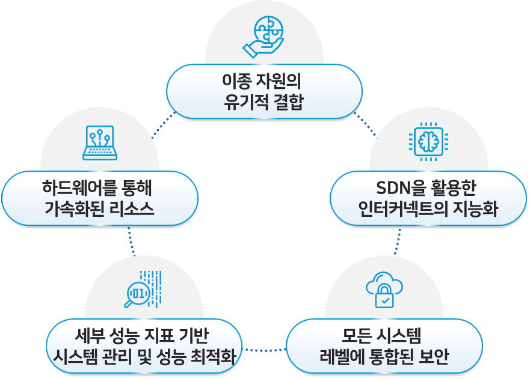
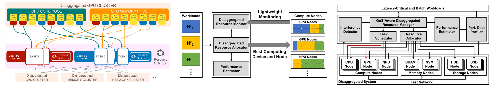
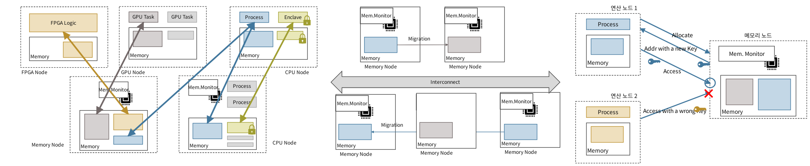
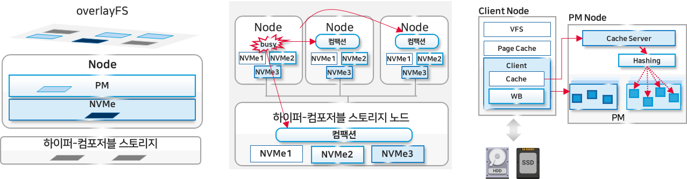
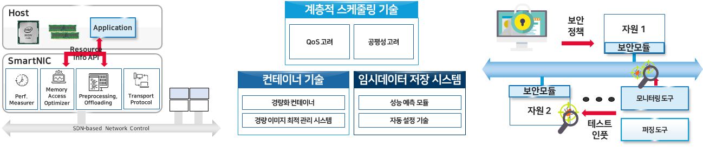

하이퍼-컴포저블 데이터센터 연구센터
Hyper-Composable Datacenter Research Center · UNIST


센터 소개
데이터센터는 전통적인 인프라스트럭처로부터 컨버지드 인프라스트럭처, 하이퍼 컨버지드 인프라스트럭처를 거쳐 컴포저블 인프라스트럭처로 진화하고 있다. 최근 각광받고 있는 컴포저블 인프라스트럭처 또는 분할 인프라스트럭처(disaggregated infrastructure)는 컴퓨팅, 메모리, 스토리지 등 개별 리소스의 형태에 따라 리소스 풀(pool)을 만들고, 관리 계층에서 이들 리소스 풀을 검색하고 액세스해 적절한 리소스를 적절한 시간에, 적절한 위치에 배치하는 형태의 인프라스트럭처이다. 최근 컴포저블 인프라스트럭처를 위한 다양한 제품이 출시되었으나 확장성의 제약, OS 및 인터커넥트의 제약으로 한계가 있다.
따라서, 본 연구센터는 온전한 컴포저블 인프라스트럭처의 구현을 제약하는 요소들을 극복하고, 한 걸음 더 나아가 컴포저블 인프라스트럭처를 넘어서는 하이퍼-컴포저블 인프라스트럭처를 제안하고 구현함으로써 초대규모 기계학습 모델의 고성능, 고효율 훈련 등 다양한 새로운 응용을 지원하는 것과 이를 주도할 고급인력 양성을 목표로 설립되었다.
하이퍼-컴포저블 데이터센터
컴포저블 인프라스트럭처와 달리 자원 간의 경계를 허물어 이종 자원을 유기적으로 결합 및 활용하고, SDN, SmartNIC, PM, SGX Enclave 등 고도화된 데이터센터 컴퓨팅 기술을 최적 활용하여 성능 및 자원 활용도, 워크로드 적응성, 보안성을 극대화하는 새로운 패러다임의 데이터센터
- 확장성, 자원 형태, 보안의 한계 극복
- 응용의 필요에 따라 이종 자원에 대해 유연하게 활용 가능하고, 신속한 접근 제공
- 인터커넥트 및 각각의 시스템 컴포넌트의 세부적인 통제 가능


과제 정보
- 센터명
- 하이퍼-컴포저블 데이터센터 연구센터 (HCDRC)
- 연구 책임자
- 백웅기 교수 (UNIST)
- 과제 목표
- 하이퍼-컴포저블 데이터센터를 위한 시스템 소프트웨어 원천 기술 개발 및 고급 인력 양성
- 지원 사업
- 대학ICT연구센터(ITRC) 육성지원사업
- 주관 기관
- UNIST
- 공동 기관
- UNIST, KAIST, 서울대학교, 성균관대학교
- 연구 기간
- 2021.07.01 – 2028.12.31
- 협력 기업
- 네이버, 인텔코리아, 세미파이브, 글루시스
세부 과제
제1세부 컴퓨팅 자원 연구
하이퍼-컴포저블 데이터센터를 위한 고성능, QoS 보장 컴퓨팅 자원 disaggregation 기법 및 초대규모 기계 학습 모델 분산 학습 기법 개발


- 백웅기 교수 (UNIST) — 성능 간섭 현상을 고려한 고성능, QoS 보장 분리형 자원 통합 관리 기법 개발
- 서지원 교수 (서울대학교) — 초대규모 기계학습 모델 분산 학습을 위한 고성능 분리형 GPU 자원 관리 기법 개발
- 이종은 교수 (UNIST) — 메모리 내 프로세싱을 위한 아키텍처, 응용 및 매핑 기법 개발
제2세부 메모리 자원 연구
컴포저블 데이터센터에서의 유연, 안전한 메모리 활용 (할당, 접근 및 재배치) 기법 개발


- 허재혁 교수 (KAIST) — 이종 연산장치를 고려한 분산 메모리 활용 기법 및 주소변환 기술 개발
- 문현곤 교수 (UNIST) — 분산 메모리 권한 관리 기법 및 비밀 실행용 원격 메모리 활용 기술 개발
제3세부 스토리지 자원 연구
초저지연 인터커넥트, CXL, 퍼시스턴트 메모리, NVMe 등 고성능 하드웨어를 활용하는 고성능 분리형 스토리지 개발


- 남범석 교수 (성균관대학교) — 분리형 스토리지의 성능을 최적화하는 오버레이 파일 시스템 기술 개발
- 노삼혁 교수 (Virginia Tech) — 분리형 스토리지에 최적화된 키-밸류 스토리지 기술, 분리형 파일-백드 대용량 메모리 캐싱 기술 개발
제4세부 보안, 네트워크, 플랫폼 연구
안전한 하이퍼-컴포저블 데이터센터를 위한 네트워크 및 플랫폼 기술 연구 개발


- 최영리 교수 (UNIST) — 하이퍼-컴포저블 환경에 최적화된 서버리스 컴퓨팅 플랫폼 기술 개발
- 임영빈 교수 (UNIST) — 네트워크 자원을 활용한 하이퍼-컴포저블 환경 최적화 기술 개발
- 전유석 교수 (고려대학교) — 안전한 하이퍼-컴포저블 환경을 위한 핵심 보안 기술 개발